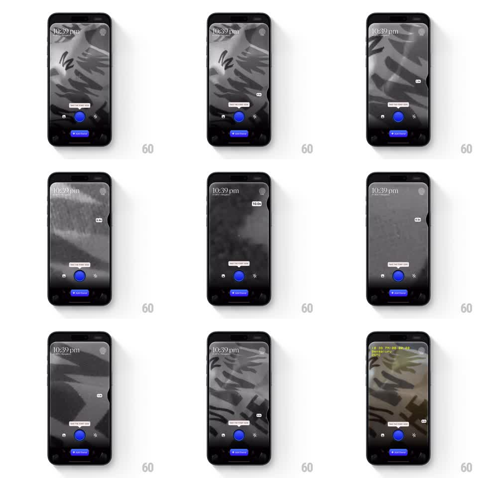

Media
Frame-by-frame

Rebuild this interaction 1:1: Tilt's edge-scroll zoom - scrubbing a finger along the screen's right edge drives zoom through a curved vertical slider, with a floating badge that tracks the current zoom level.

Rebuild this interaction 1:1: Tilt's edge-scroll zoom - scrubbing a finger along the screen's right edge drives zoom through a curved vertical slider, with a floating badge that tracks the current zoom level. ## Integration Integration: stack-agnostic spec - springs given as stiffness/damping, timed motions as duration + curve; map every value to your framework and animation library of choice. ## Scene A full-bleed photo/viewer screen. A curved vertical slider hugs the right edge - an arc of tick marks bending inward. Scrubbing it zooms the content; a floating pill badge showing the zoom factor (e.g. "2.4x") hovers near the thumb position. ## Motion spec Pattern: edge-scrub curved slider with tracking badge. - Touch the right-edge zone (~44pt): the curved slider fades in (150ms) and the thumb snaps to the finger's Y with a spring (stiffness ~500, damping ~30). - Vertical drag maps to zoom: the arc's curvature means linear finger travel maps to an eased zoom ramp (slow near 1x, accelerating toward max ~5x); content zooms 1:1 around the viewport center. - The badge floats just left of the thumb, tracking its Y exactly, value updating live; it scales in (0.8 to 1, 150ms) on appearance. - Ticks illuminate progressively as the thumb passes them - the lit portion sweeps along the curve. - Release: the slider and badge hold for 400ms, then fade out (200ms); zoom stays where it was left. A light spring (stiffness ~380, damping ~28) settles the thumb onto the nearest tick if snapping is enabled. ## Calibration - The curve is visual and mathematical - finger-to-zoom mapping follows the arc, not a straight line, so scrubbing feels faster at the top. - Zoom is anchored at screen center; pinch-parity matters if both gestures coexist. ## Reduced motion Straight slider, no fade choreography; zoom changes instantly with drag. ## Don't miss - The badge never lags the thumb - they share one animated value. - Content under the slider must not clip at zoom extremes; edges clamp with a soft rubber-band.